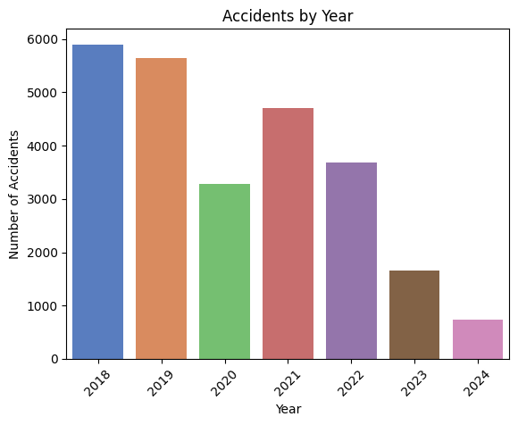
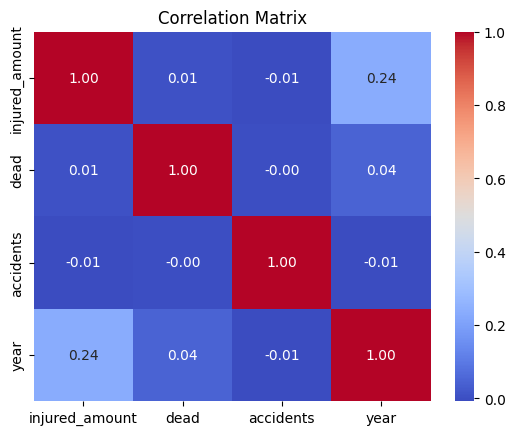
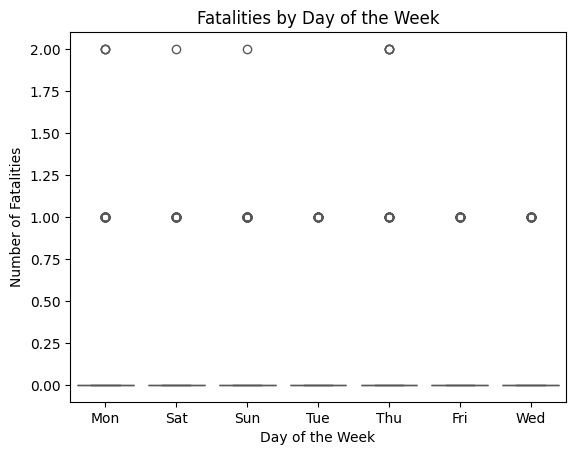
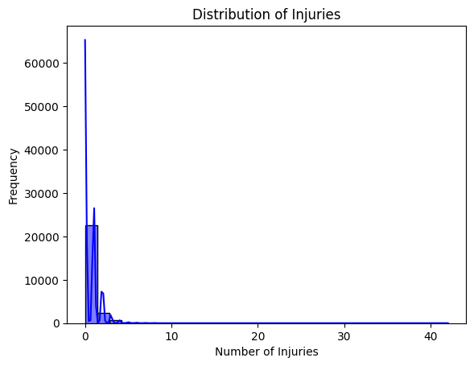

baqapp - Data Exploration
Data Exploration
Data Overview
The dataset consists of 25,610 records with the following columns:
The dataset comprises 25,610 observations with the following 11 variables:
Date: The date of the accident.Hour: The hour when the accident occurred.Severity: The severity level of the accident.Type: The type/category of the accident.Address: The location or address where the accident occurred.Injured_Amount: The number of injured individuals in the accident.Dead: The number of fatalities.Accidents: Indicates if an accident occurred (1 or 2 for multiple).Year: The year of the accident.Month: The month of the accident.Day_of_Week: The day of the week when the accident occurred.accident_occurrence: The probability of occurrence of an accident.
Summary Statistics
Most accidents occur with no injuries (median Injured_Amount = 0) and no fatalities (median Dead = 0).
The highest recorded injury count is 42, while fatalities go up to 2.
Data spans the years 2018 to 2024, with most accidents likely concentrated around 2020 (mean year = 2020.1).
Exogenous Repositories
Proposed External Data Sources:
Weather Data: To analyze the impact of weather conditions (e.g., rain, fog, visibility) on accidents. Integration from services like NOAA or Weather Underground APIs can enhance accident risk modeling. This data may provides insights into accident risks due to adverse conditions
Traffic Volume Data: To evaluate the correlation between traffic density and accident frequency, sourced from local transport agencies or open traffic datasets. This data may helps understand peak hours or congested areas contributing to higher accident rates.
Road Infrastructure Data: Maps of road conditions, signals, and intersections can help identify high-risk areas. Sources could include OpenStreetMap or municipal GIS databases. This data may enables the identification of structural risk factors.
Geocoding Accident Locations: Extract latitude and longitude from the address column using geocoding tools like GeoPy and the Nominatim service. This allows mapping accidents spatially and linking them with location-based external data (e.g., proximity to hospitals, intersections, or high-traffic areas). This data enhances spatial analyses, facilitating the creation of accident heatmaps and integration with weather or road data
Data Visualization
Let’s generate some visualizations to better understand the dataset.
Yearly Accidents:

A bar chart of the number of accidents by year reveals that accidents peak during 2018, suggesting it have being decrementing the lastest years.
Correlation matrix:

injured_amount and year (0.24): A weak positive correlation, indicating that as the years progress, there may be a slight increase in the number of injured individuals. This could reflect changes in reporting, traffic volume, or accident severity over time.
injured_amount and dead (0.01): Almost no correlation, suggesting that the number of injuries in accidents does not directly predict fatalities.
injured_amount and accidents (-0.01): No meaningful correlation, implying that the frequency of accidents is not closely tied to the number of injuries per accident.
dead and other variables: Very low correlations (0.04 with year and close to 0 with others). This indicates fatalities are not strongly associated with these other factors in the dataset.
accidents and all other variables: Close to zero correlations, suggesting accident frequency operates independently of other numeric factors such as injuries or year.
Analysis by Day of the Week:

Fatalities appear to be evenly distributed across the days of the week, with no significant spikes or troughs. The values hover around 0 or 1 fatalities per day, with an occasional 2 fatalities. The plot suggests that fatality counts are generally low and consistent regardless of the day. This implies that the day of the week does not strongly influence the occurrence of fatalities in accidents.
Injuries Distribution:

The majority of the observations are concentrated near zero injuries, indicating that most accidents result in no or very few injuries. There is a long right tail, suggesting the occurrence of some accidents with a significantly higher number of injuries, although these are rare. There appear to be extreme cases (e.g., over 30 injuries) that are uncommon but influential in extending the range of the distribution. These cases may warrant further investigation to understand their context (e.g., mass-casualty events).
Data Cleaning
During the data cleaning process, all records lacking location information, such as latitude and longitude, were removed, as spatial data is critical for predicting accidents. The dataset was narrowed to essential fields, including latitude, longitude, hour, day_of_week, and month, ensuring focus on the most relevant predictors. Inconsistent entries, such as invalid values for time or geographic coordinates outside Barranquilla’s bounds, were identified and eliminated. Categorical variables like day_of_week and month were numerically encoded, while continuous variables such as latitude and longitude were normalized to standardize their scale. These steps ensured a consistent and clean dataset for model training.
Data Imputation
For data imputation, missing records for certain hours were addressed by generating entries where no accidents occurred, ensuring a balanced temporal representation. For dates with accidents but incomplete hourly data, new records were created with accident occurrence set to zero for missing hours. Additionally, a binary target variable, accident_occurrence, was introduced to classify records as 1 (accident occurred) or 0 (no accident occurred), simplifying the prediction problem. These techniques ensured the completeness of the dataset while reducing bias, supporting the model’s ability to learn both accident and non-accident patterns effectively.